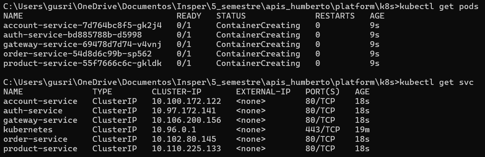

MiniKube
Parte do Checkpoint 5
Objetivo
Executar todos os serviços da plataforma localmente em um cluster Kubernetes com o Minikube, simulando um ambiente de orquestração completo.
Pré-Requisitos
- Docker instalado e rodando
- Minikube instalado
- kubectl instalado
Passos para Rodar
1. Iniciar o Minikube
No terminal, rode:
minikube start --driver=docker
Isso cria um cluster Kubernetes local usando Docker como driver.
2. Clonar e navegar até o projeto
cd platform/k8s
Esse diretório contém os arquivos YAML de deployment e service gerados para:
account-serviceauth-serviceexchange-servicegateway-serviceorder-serviceproduct-service
3. Aplicar todos os arquivos
kubectl apply -f .
Esse comando lê todos os arquivos
.ymldo diretório atual e sobe os pods e serviços no cluster.
4. Verificar status
Pods
kubectl get pods
Serviços
kubectl get svc
Retorno Esperado:

Acessando a aplicação
Se quiser acessar algum serviço (ex: gateway-service) localmente via browser:
minikube service gateway-service
Isso abre automaticamente o serviço no navegador com um túnel temporário via Minikube.
Arquitetura do k8s/
k8s/
├─ account-deployment.yml
├─ account-service.yml
├─ auth-deployment.yml
├─ auth-service.yml
├─ ...
└─ product-service.yml
Cada serviço possui dois arquivos:
| Tipo | Descrição |
|---|---|
| Deployment | Define quantas réplicas, imagem... |
| Service | Expõe a porta do pod no cluster |